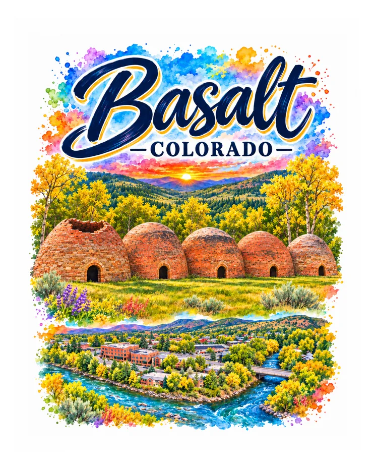
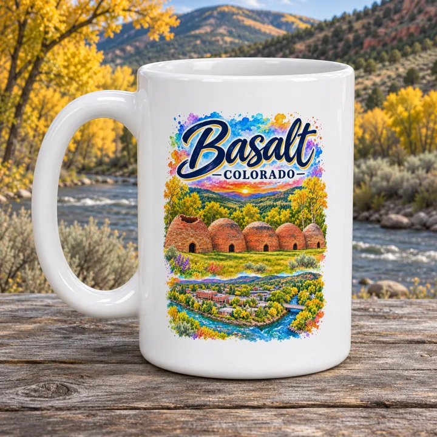

Restaurant & Bakery
Heather’s Savory Pies
A Midland Avenue restaurant known for savory pies, comfort food and live music.

A Roaring Fork Valley town where two rivers meet and historic charcoal kilns recall its railroad and mining roots.
Basalt grew around the railroad near the meeting of the Fryingpan and Roaring Fork rivers. The town took its name from the volcanic rock of nearby Basalt Mountain.

Rounded stone charcoal kilns and the river valley below them bring Basalt’s early industrial history and mountain setting together.
Collect the places you’ve been. Discover the places you’ll go next.

$13.99 + shipping
This white 15 oz coffee mug features Basalt’s historic charcoal kilns in watercolor, with bold lettering and a colorful valley backdrop.
Shop NowStart in historic downtown, where the chamber’s red caboose marks the beginning of the walking tour, or follow the Fryingpan River into the valley.
Basalt developed as Aspen Junction, a railroad community serving the Roaring Fork and Fryingpan valleys in the 1880s. The name changed to Basalt in 1895, and the town incorporated in 1901. Its early story links railroad construction, charcoal production and the mining economy, a legacy recalled by the town's historic buildings and walking tour.
The charcoal kilns, historic downtown and two rivers connect Basalt’s railroad-era past to the landscape visitors see today.
The stone kilns produced charcoal during the region’s mining era.
The chamber’s red caboose near Town Hall is a starting point for the historic walking tour.
The basaltic rock of the mountain north of town inspired Basalt’s name.
A Midland Avenue restaurant known for savory pies, comfort food and live music.
A local fly shop offering gear and guided trips on area rivers.
Explore the river setting that helped shape Basalt and draws anglers to the valley.
Visitor information →Start near the red caboose in Lions Park and follow the chamber’s guide to historic downtown landmarks.
Walking tour guide →